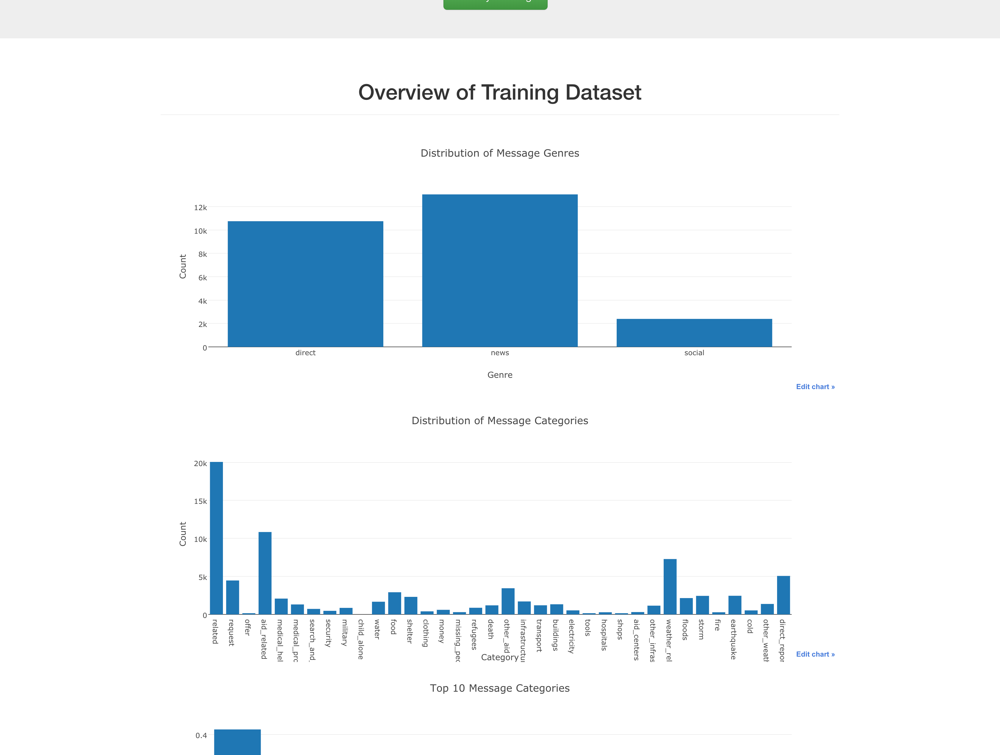
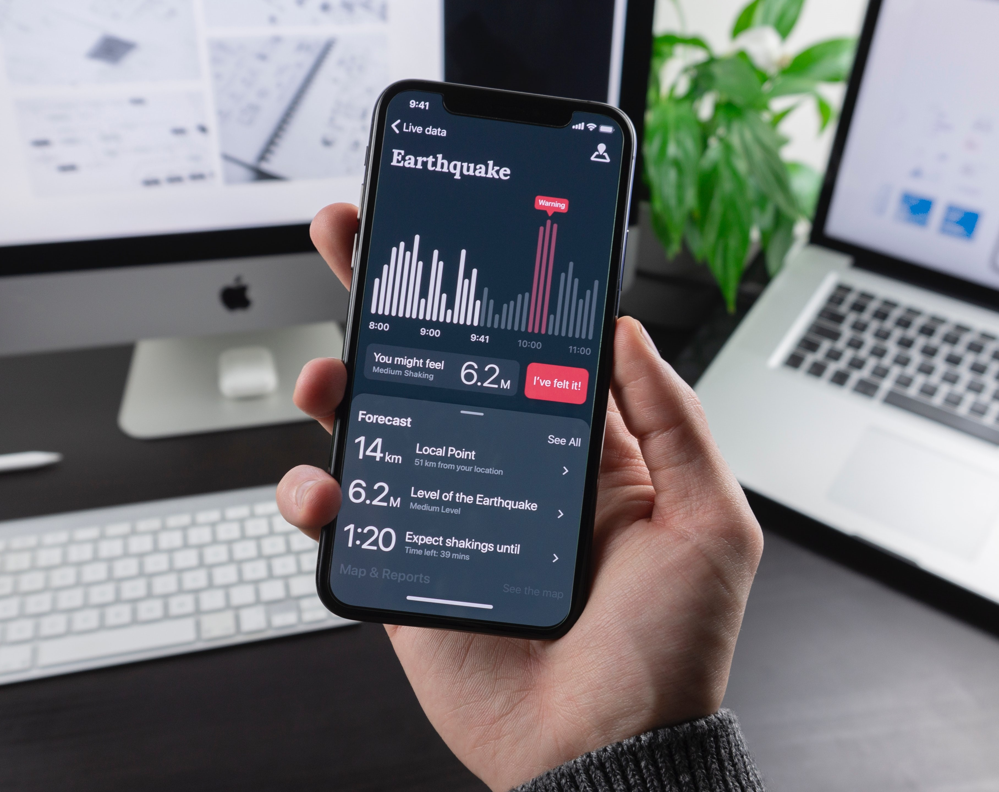
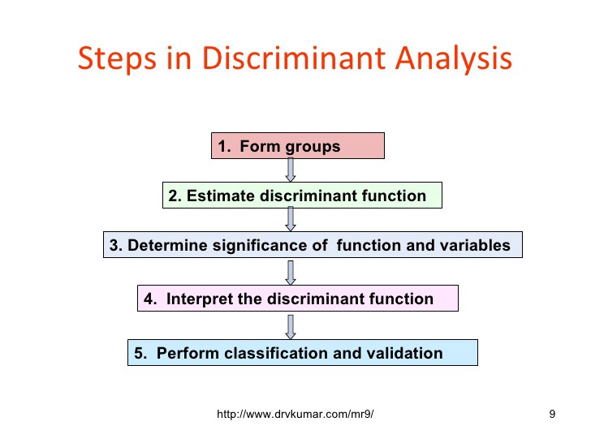

Data scientist with 3+ years of tech industry experience in a wide range of functions including predictive modeling, content discovery, product analytics, deep learning, computer vision and natural language processing
Recent Work
Data Science Projects
Arvato Data Science Project
This project uses supervised learning and unsupervised learning techniques to find characteristic features of typical customers for the focused mail order company and to predict which person would respond to a mailout campaign.
StarBucks Data Science Capstone
My objective here is to find patterns and show when and where to give specific offer to a specific customer. Main users of this kind of applications are Starbucks employees and analysts. The plan in this project we have questions and we answer them with data visualizations. The data provided by Starbucks contains simulated data that mimics customer behavior.

Data Engineering - Disaster Response Relief Project
The project is divided in three sections:
Data Processing: build an ETL (Extract, Transform, and Load) Pipeline to extract data from the given dataset, clean the data, and then store it in a SQLite database
Machine Learning Pipeline: split the data into a training set and a test set. Then, create a machine learning pipeline that uses NLTK, as well as scikit-learn’s Pipeline and GridSearchCV to output a final model that predicts a message classifications for the 36 categories (multi-output classification)
Web development: develop a web application to show classify messages in real time
Deep Learning:Developing an AI application (Image Classifier)
In this project, I first develop code for an image classifier built with PyTorch, then I will convert it into a command line application.

Unsupervised Learning - Customer Segmentation
In this project, I applied unsupervised learning techniques to identify segments of the population that form the core customer base for a mail-order sales company in Germany. These segments can then be used to direct marketing campaigns towards audiences that will have the highest expected rate of returns.
Job Recommendation System
In this project, I built a recommender system of new york city job posting using machine learning techniques learned in IBM advanced data science specialization. Then I used neural network to improve the model performance. The dataset is obtained from Kaggle, https://www.kaggle.com/new-york-city/new-york-city-current-job-postings.
This dataset contains current job postings available on the City of New York’s official jobs site (http://www.nyc.gov/html/careers/html/search/search.shtml). Internal postings available to city employees and external postings available to the general public are included. This is a dataset hosted by the City of New York. The city has an open data platform found here and they update their information according the amount of data that is brought in. Update Frequency: This dataset is updated weekly.
Blog

Classification Part I: Discriminant Function Analysis (A Case Study)
In this post, I covered Discriminant function analysis using geological measurements on brine from wells as a case study.